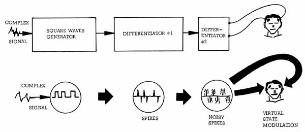
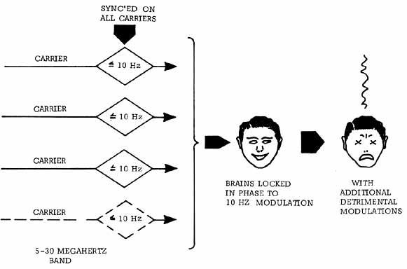

EXCALIBUR BRIEFING
THE NEUROPHONE Another device that uses the new hyperspatial, virtual state, nested modulation technology (and has done so for seventeen or eighteen years) is Dr. Pat Flanagan's neurophone. With brilliant insight and intuition far beyond that of science at the time, Pat invented and patented the instrument by the time he was seventeen years old. The neurophone is a device that, contrary to all present theory and knowledge, will directly “pump the brain” and reproduce sound and information directly in the brain and mind system, without going through the auditory system at all. A simplified diagram of Pat's improved neurophone is shown in Figure 11. |

|
Briefly, the device takes a complex signal, such as the sound of an orchestra playing a musical interlude, and electrically processes it as shown in the figure. First the signal is passed into a section that clips everything into a series of square waves, remarkably analogous to the sort of clipped waves Lisitsyn confirms are the information carriers of the human brain. Next the square waves are
differentiated, yielding a series of sharp spikes (note that these spikes retain the pulse-time content of the clipped signal). These spikes are again differentiated, and since these are finite spikes with real nonzero rise times and decay times rather than theoretical constructs, a series of noisy spikes results from the second
differentiator section. From here, the noisy spikes are introduced to special contact
electrodes, one of which is normally placed on the forehead, while the other may be placed almost anywhere, including on the foot. Nowhere are any sound waves introduced to the head.
But, as I have said, all this can be used for the detriment of mankind as well as for its benefit.
Unfortunately, it appears that the Soviet Union has chosen to weaponize the effects on a global scale.
A prime example is the
“woodpecker” signals emanating from the USSR in the 5-30 megahertz region and interfering with communications around the earth. |

| The pioneering experimental measurements of these signals by Dr. Robert Beck and William
Bise have shown just how deadly a potential may be possessed by the signals. These measurements have been performed in Eugene and Portland, Oregon; Los Angeles, California; Huntsville, Alabama; and several other locations. They have been particularly significant on the West Coast in and around Eugene, Oregon because of the presence of a direct current transmission line several hundred miles long, which has acted as a long wire antenna, picking up the signals and rebroadcasting them with appreciable gain in the vicinity. Typically the signals may be found on, say, sixteen different carriers between 10 and 20 megahertz. Twelve of the carriers may appear normal, with normal side-bands, and the other four may have the carrier and both sidebands suppressed but still show the biologically significant modulation (for example, 10 hertz). On all sixteen channels a strong 10 hertz modulation may appear, all perfectly time synchronized and in phase channel-to-channel. The received signal from one of these carriers may be twenty-five to thirty times as strong as the earth's back-ground magnetic field, which is oscillating at approximately 7.0 to 7.5 hertz. Other complex modulation frequencies, many of them changing, are present on the various channels. Normally, the brainwaves of mammals in an area are gently entrained by the normal oscillations of the earth's magnetic field and are oscillating along at, say, 7.5 hertz. Under continuous radiation from the Soviet woodpecker signals, a percentage (say 30 percent) of the mammalian brains may be captured by the 10 hertz modulation on the overpowering Soviet signals. These captured brains are now in forced oscillation and are riding along in phase with the 10 hertz Soviet modulation. In other words, a certain percentage of the human brains in an area will phase lock to the 10 hertz modulation, and that will effectively lock into those brains the sixteen carrier frequencies with their concomitant frequency mixes and complex signal modulations. If the signals are made much more powerful (for example, by focusing them onto one particular area or increasing the power of the transmitters), then a much higher percentage of brainwave entrainment can be accomplished in the targeted area. By simply adding on the desired modulation patterns, the Soviets can now pump material directly into the mind-brain-consciousness-life loops of the entrained brains. The weapon implications are enormous: raw emotion such as sheer terror or panic can be transmitted; death or disease patterns of all kinds can be transmitted; informational content (thoughts and ideas) can be impressed directly into the captured brains and minds and processed as if originating inside each brain itself. Indeed, as long as the Soviets keep the effects rather gentle, an entire population can be subtly influenced without governmental notice. Certain specific ELF frequencies can rapidly disable or even kill, and for wartime use those frequencies can be directly implanted in the captured brains themselves by the woodpecker signals. It appears that 1984 came a little early, and one can perhaps now understand Brezhnev's strange 1975 proposal to the SALT negotiations that we should also consider outlawing the development of new weapons more frightful than the mind of man has ever conceived. The signals also have direct application against strategic targets other than personnel. For example, by incorporating the correct nested modulation pattern, the positron kindling (electron squelching) pattern can be impressed. By beaming through the earth (with a circularly polarized signal or with other complex modulation forms), a beam with a strong neutrinic component, which will squelch electrons and which will interact with great preference for strong voltages or strong magnetic fields, can be directed at a target complex. In the targeted area aircraft and communications systems can be disabled; automobile, truck, and other ignition systems will fail; power transformers and large motors and generators will fail; power transmission systems with their associated high voltages will fail; and so on. Even independent, self-contained emergency power equipment, such as at military installations and strategic missile sites, will fail to operate. Further, to some of these signals, the earth and the sea are as transparent as glass, and so underwater nuclear submarines can be electrically disabled on station before their missiles can be fired, while strategic missile complexes can be electrically disabled before their deadly nuclear missiles can be hurled toward their distant targets. If some submarines and land complexes succeed in firing missiles before being disabled, these missiles can be electrically dudded and scrubbed from the sky over Soviet territory while still far from their intended targets. So, as stated at the end of Excalibur, the players are on stage and in place. The final act begins. One thing is sure—mankind will never be the same again after seeing the play!
|